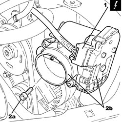
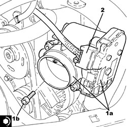
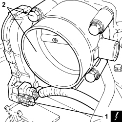

1056F17 THROTTLE BODY WITH DVL - R.R.
- Path
- Procedures > 10 ENGINE > 1056 PETROL INJECTION SYSTEM > 1056F PETROL DIRECT INJECTION SYSTEM > 1056F17 THROTTLE BODY WITH DVL - R.R.
- Kind
- repair procedure (removal / refitting; the operation number is the code)
- Applies to
- engines: 2.2 JTS, 3.2 JTS; all production periods
- Interactive page
- https://sloeber94.github.io/elrnDB-aBrrSpdr/en/#/946001907
Applies to: engines: 2.2 JTS; all production periods
 Removing
Removing
 Refitting
Refitting- Make sure that the ignition key is in the OFF position, then disconnect the battery terminal (-).
Description | Connector | |
|---|---|---|
- | Battery |
Op. 1048A34 HOSE(S) FROM FLOW METER TO AIR SUPPLY CAPACITY CASE - R + R
1. Disconnect the electrical connection from the throttle casing with D.V.L.
Description | Connector | |
|---|---|---|
1 | Integrated throttle casing actuator |
2. Undo the bolts (2a) and remove the throttle casing with D.V.L. (2b).
- Remove the air chamber gasket.

Applies to: engines: 2.2 JTS; all production periods
Refitting
Removing- Place a new gasket in its housing on the air chamber.
1. Place the throttle casing with D.V.L. (1a) in its housing and secure it tightening the bolts (1b) to the recommended torque.
Component | Fastening | dia | Value (daNm) | Validity |
|---|---|---|---|---|
Throttle body built into DVL | Bolt | M6 | (air chamber side) 0.9 | 1.9 JTS 2.2 JTS |
2. Connect the electrical connection to the throttle casing with D.V.L.

Applies to: engines: 2.2 JTS; all production periods
Op. 1048A34 HOSE(S) FROM FLOW METER TO AIR SUPPLY CAPACITY CASE - R + R
- Connect the negative battery terminal.
Applies to: engines: 3.2 JTS; all production periods
Removing
RefittingOp. 1048A63 HOSE CONNECTING RESONATOR, FLOW METER AND THROTTLE BODY - R.R.
1. Disconnect the electrical connection for the throttle casing.
Description | Connector | |
|---|---|---|
1 | Integrated throttle casing actuator |
2. Undo the fixing bolts and remove the throttle casing.
- Remove the gasket.

Applies to: engines: 3.2 JTS; all production periods
Refitting
Removing- Position the throttle casing complete with gasket in its housing and secure it using the bolts.
- Connect the electrical connection for the throttle casing.
Op. 1048A63 HOSE CONNECTING RESONATOR, FLOW METER AND THROTTLE BODY - R.R.
Topics linked from this page (4)
- 1048A34 HOSE(S) FROM FLOW METER TO AIR SUPPLY CAPACITY CASE - R + R
- 1048A63 HOSE CONNECTING RESONATOR, FLOW METER AND THROTTLE BODY - R.R.
- A001 BATTERY
- N075 BUILT-IN THROTTLE BODY ACTUATOR
Topics that link to this page (18)
- B001 IGNITION SWITCH NOT WORKING
- X001 EXCESSIVE FUEL CONSUMPTION
- 1016C10 SINGLE CYLINDER HEAD - R.R. AND REPLACE GASKET
- 1028H10 CONNECTING ROD AND PISTON SET - R.R
- 1056F68 INJECTOR SET - R.R. INCLUDING GASKET REPLACEMENT
- 1072B21 AIR INTAKE FUEL MANIFOLD INTERGRATED DUCT R R AND REPLACE GASKET
- 1072B50 AIR CHAMBER - R.R.
- 1072B54 HOSES CONNECTING AIR INTAKE CHAMBER TO INTAKE MANIFOLD(S) - R.R.
- 1072C13 EXHAUST MANIFOLD GASKET - REPLACE
- 1072C16 EXHAUST MANIFOLD WITH CATALYTIC CONVERTER - R.R.
- 1080E28 ENABLEMENT SOLENOID FOR FLOW OF FUEL VAPOUR TO INLET - R+R
- 4130B20 POWER STEERING PUMP - R.R.
- 5530A10 ALTERNATOR - R+R
- 5540B53 BULB (ONE) FOR RIGHT LIGHT CLUSTER - R.R.
- E5030 PETROL ENGINE ELECTRONIC MANAGEMENT - WIRING DIAGRAM
- E5030 PETROL ENGINE ELECTRONIC MANAGEMENT - COMPONENT LOCATION
- E5030 PETROL ENGINE ELECTRONIC MANAGEMENT - WIRING DIAGRAM
- E5030 PETROL ENGINE ELECTRONIC MANAGEMENT - COMPONENT LOCATION